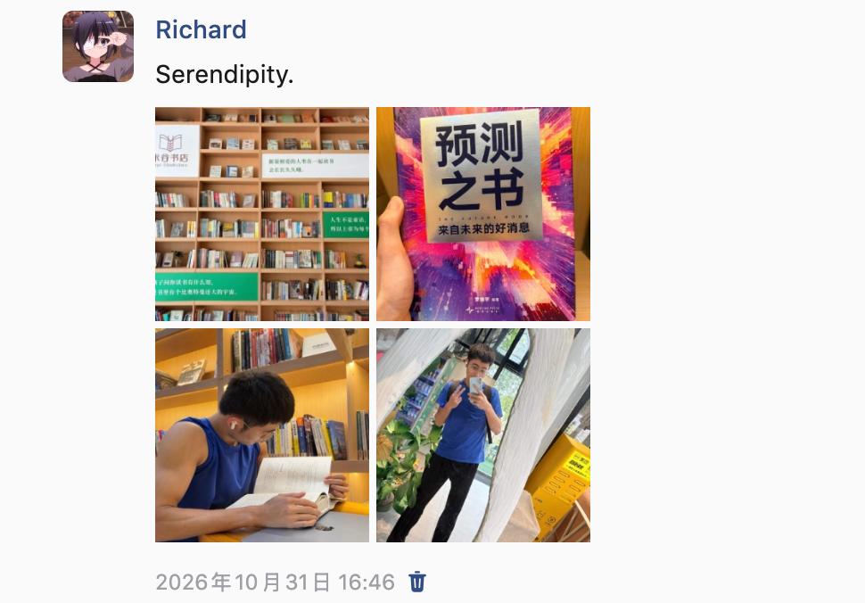

一本书 608 页，Agent 只读了 22%：book-to-skill 的原理和一次完整实测
周六下午在书店闲逛，手里正好摸到这本《预测之书》：

翻了几页发现编排挺有意思：49 位作者，每人押一个自己领域的未来，罗振宇编著。当时还没决定买，但心里已经起了个念头：几天前我正在研究一个 GitHub 项目 book-to-skill，它的README 里有一句很嚣张的话，说经过它转换的书，回答问题时比把书直接丢进上下文省 24 到 51 倍的 token。当时我读完源码觉得设计得很聪明，但没有实测数据。正好，这本书就是现成的测试材料。
回家后我把这本书的 PDF（608 页，4.3MB）完整跑了一遍：提取、建索引、按需读取、最后写成一篇七千字的长文。整个过程里 Agent 实际读入的正文只占全书的 22%。这篇文章把原理和过程全部记下来，包括踩的坑。
一、为什么不能把 PDF 直接丢给 Agent
先给老办法一个公平的位置。文档不长的时候，直接丢进上下文就是最优解：几千字的 README、一篇论文，模型一次读完，没有比这更简单的方案。
问题出在"长"上。一本书是什么量级？《预测之书》提取出纯文本后是 26.5 万字符，折算 token 大约 15 万到 18 万。现在模型的窗口装得下这个数字，但装下之后会发生三件难受的事。
第一，成本按轮计费。整本书常驻上下文，意味着后面每一轮对话都在为这 15 万 token 重新付费，哪怕你只想问其中一个概念。
第二，模型的有效注意力会被稀释。塞满长文的上下文里，模型对中间内容的召回会明显变差，这比成本问题更致命，因为它直接产出幻觉。
第三，如果不是整本塞，而是让 Agent 自己"读 PDF 找答案"，就会掉进另一个坑。book-to-skill 的文档里管这个叫 discovery loop（发现循环）：Agent 先读目录，猜答案可能在第 7 章，拉进来发现不是，再读第 12 章，中间遇到一个没见过的术语又得回头查。每一轮导航的输出都留在历史里，越找越贵。项目里有个 tools/discovery_tax.py 专门量化这件事，对比三种策略回答同一个问题的 token 开销：整本常驻、发现循环、预编译 skill。结论是发现循环的开销和答案大小无关，和迷路的次数有关。
所以真正的问题是：能不能把"查找"这件事从查询时挪走，让每次提问的成本只和答案大小相关，和书的厚度无关。book-to-skill 的答案是把书"编译"一次，然后按需加载。
二、原理：一半是 Python，一半是提示词
clone 下来第一件事是看它到底有多少代码。答案是：book_to_skill 包加 tools 目录一共五千行左右的 Python，外加一个 879 行的 SKILL.md。
看到这里我愣了一下，然后觉得这个设计非常聪明。这个仓库本身就是一个符合 Agent Skills 标准的 skill，也就是说它没有自带什么"AI 转换引擎"，它把自己的身份设定成了：Python 负责确定性环节，SKILL.md 是一份说明书，真正的转换器是你已经装好的那个 Agent（Claude Code、Copilot CLI、Amp 都行），模型照着说明书一步步执行。
这两半的分工值得单独说。
Python 提取器干的是"交给模型做一定会翻车"的活。每种格式维护一条工具降级链，比如 PDF 是 pdftotext，然后 pypdf，然后 pdfminer，技术书可以上 docling，缺哪个自动落到下一个。还有一堆针对真实排版学的清洗逻辑：统计每页首末行，出现超过一半页面的行判定为页眉页脚删掉；识别罗马数字页码。后一条有个很诚实的注释，说旧版正则 [ivxlcdm]{1,7} 会把 MIX、CIVIL 这种词当成页码误删，因为一行字的页码形状和标题太像了，宁可漏删一个真页码也不能删掉正文。这种坑只有跑过大量真实书籍才会知道，交给模型现场发挥是稳定踩一遍的。
SKILL.md 干的是"交给代码做一定做不了"的活。Step 0 到 Step 11，本质是一份编译 spec：怎么向用户确认书籍类型和成本预估，怎么分析章节结构，每章按什么模板生成、token 预算多少，最后怎么生成主索引、做安全扫描、发布。模型负责其中所有的"理解"和"写作"，spec 负责把质量钉住。
里面有几条设计我觉得可以直接抄到自己的 skill 里。一个是重跑守卫：转换前先检查目标 skill 是否已存在，存在就必须停下来问用户是更新、验证还是重建，而判断"是否同一个输入"用的是 metadata.json 里的 sha256 指纹，文件名相同内容不同也不许复用旧结果。另一个是 symlink 回读：给 Claude Code 建完软链后必须 readlink 读回来验证，注释里写得很清楚，Windows 上 ln -s 可能悄悄变成复制，命令执行成功和事情真的办成了是两回事。还有一条反幻觉规则：要求模型在生成的索引里声称某个框架存在之前，先 grep -c 验证它在原文里真的出现过。
三、实测：608 页从 PDF 到文章的全过程
下面是完整过程。环境：macOS，系统里没有装 poppler（pdftotext 不存在），python3 有 pypdf。
1. 依赖检查和提取
先跑环境自检，不用提供文件：
1 | python3 scripts/extract.py --check |
输出会按格式列出每个格式的可用工具和缺什么。我的环境里 PDF 文字链只有 pypdf 可用，够用。然后执行提取：
1 | BOOK_SKILL_WORKDIR="$PWD/bsk_work" python3 scripts/extract.py "预测之书2025.pdf" --mode text |
这一步是纯 Python，不花 token。产物是一个工作目录，里面有 full_text.txt（全文，带清晰的源文件边界标记）和 metadata.json（页数、字符数、每个源的 sha256）。终端摘要报了几个数字，其中一个是 13,095 words。这个数字是错的，或者说对中文没有意义：它的 word 统计按空格切分，中文没有空格，一整段只算一个"词"。我自己数了一遍，实际是 215,991 个汉字，折算 token 大约 15 万到 18 万。这是第一个坑：这个工具的 token 预估口径是英文的，中文书要自己按字符数估。
2. 结构探测：目录要自己找
提取器在摘要里报了 Chapters: 0 detected 和 ToC: not detected，还附了一条警告说后续的章节映射只能靠标题扫描。这个报警是诚实的，这本书的目录页确实没有被它识别出来。中文书籍的目录格式（“预测NO.01 预测人：刘擎”）不在它的检测模式里。
所以这一步得自己来，全程用 grep 和 python 脚本探测，不整读文件。第一步找"目录"关键词，定位到了 ToC 起点；把目录段拉出来，全书结构就清楚了：四个部分，49 条预测，每条一位作者。第一部分"未来的我会更好吗"是预测 01 到 11，第二部分"未来的世界会变糟吗"是 12 到 27，第三部分"哪些机会正在涌现"是 28 到 41，第四部分"现在的我该关注什么"是 42 到 49。
中间踩了第二个坑。我先按"短行"模式找章节标题，拿到 74 个候选，一看全是 "002 预测之书" 这种行，是页脚（页码加书名），每页一个。过滤模式很简单，匹配 ^\d{3}\s*预测之书$ 的行直接剔除，10599 行变 10525 行。第三个坑是我一开始想抓"前言的后半段"，用偏移量截了一段出来，结果拉出来的是目录加第一章开头的重复内容，偏移量算错了，换成按关键词定位才拿对。这三个小坑放在一起其实说明了一件事：面对一份陌生的提取结果，先探测结构再读内容，探测本身几乎不花钱。
3. 按需读取：22% 是怎么算出来的
接下来是关键一步。全书 26.5 万字符不能读，但写一篇讲透全书的文章又不能只看目录，怎么办。我的做法分三层。
第一层，生成摘记。用脚本把 49 篇文章各自的定位偏移找出来（每篇的正文都以"预测人：某某"开头），每篇截取开头 900 字符，拼成一个摘记文件。900 字符对一篇五六千字的文章来说，刚好覆盖"核心论点 + 第一层论证"，足够判断这篇值不值得深读。摘记总共 4.5 万字符。
第二层，分批读入摘记。4.5 万字符分两次读完，读完我就有了 49 篇每篇的论点、作者身份和论证起点。到这里消耗的 token 还不到全书的 10%。
第三层，定点深读。从 49 篇里挑出对文章真正承重的几篇，按关键词定位后拉论证核心段：前言全篇（编者的四象限编排逻辑和电梯效应）、万维钢那篇的富足机制链、古典那篇的康波周期和六种 pi 能力、梁宁那篇的三个时代尺子。每篇只拉三五千字符。
三层加起来，实际读入约 6 万字符，占全书 22%。剩下 78% 我从来没有碰过，但我知道它们在哪、每篇讲什么、需要时用偏移量随时能拉。这就是那个 24 倍节省在单次任务里的形态：省的不是"最后读没读"，而是"为了找到该读的部分，要不要把不该读的也付一遍钱"。
4. 写作
最后写文章这一步用的是我自己配的 writing 方法论：先立写作卡（读者是谁、他默认的答案是什么、这个答案在哪失效、核心判断是什么、哪个案例串起全文），然后按问题推进，而不是按目录罗列。材料来源就是摘记加深读片段，文中引用的每个数字都能对回原文，比如张斌用保安月薪买大米的购买力数据、卫哲的三个带时间尺度的预测、施展的出口额数据。成品是一篇七千字的解读，存成了 markdown。
5. token 账本
把这次实测的开销汇总一下：
| 环节 | 读入内容 | 估算 token |
|---|---|---|
| 提取 | 0（纯 Python） | 0 |
| 结构探测 | 目录段 + 候选行 | 约 3K |
| 摘记 | 49 篇开头各 900 字 | 约 30K |
| 深读 | 4 篇承重段 + 前言 | 约 12K |
| 合计 | 约 6 万字符 / 全书 22% | 约 45K |
对照方案是整本读入：15 万到 18 万 token 起步，而且这还只是读，写作过程中反复回查会成倍叠加。22% 这个比例没有精确到值得迷信，但它说明了一件事：写一篇讲透全书的文章，需要的材料远比整本书少，缺的只是"知道该读哪 22%"的结构信息，而结构信息的获取成本几乎为零。
四、这套模式的可复用之处
名字里带 book，但输入可以是任何结构化文档。项目自己的说法是：架构决策记录、运行手册、品牌手册、论文加笔记的合集，任何"你拥有、会反复查阅"的文档集合都适用。逻辑是通的，这类材料的特点是单次用量小、查阅频次高、每次查询都在为导航付费，正是"一次编译、按需加载"最划算的场景。
比"能转书"更有价值的是它对写 skill 的示范。我把值得抄的列一下。
提示词要防的事情比想象中多。这个 879 行的 spec 里，真正讲"怎么转换"的篇幅不到一半，另一半全在防失败：重跑守卫防覆盖，指纹校验防断点续跑时复用脏数据，回读验证防命令执行了但事情没办成，grep 先行防模型编造书里没有的概念，成本预估前置防用户跑完才发现账单爆炸。每一条对应的都是 LLM 做长任务时真实会犯的错。
确定性环节要坚决从提示词里拿走。文本提取、依赖检测、指纹计算、token 统计，这些事模型做又慢又贵又不稳定，一个脚本搞定。模型只留在真正需要智能的地方：判断结构、提炼框架、控制密度。
分层加载是省 token 的通用形状。常驻层只放索引和心智模型，细节全部下沉到按需文件。这个形状不止适用于 skill，Agent 的记忆系统、知识库设计都是同一个道理。
边界也说清楚。扫描版 PDF（页面是图片、没有文字层）这套流程直接失效，提取器检测到会立即停止让你先跑 OCR，这个处理是对的。提取质量决定上限，页眉页脚清不干净、章节切不准，后面全都白搭。另外它生成的 skill 是衍生笔记，拿第三方版权书生成的产物别公开分发，项目自己也反复强调这一点。
五、产物和复现
这次实测的三个产物：一篇七千字的《预测之书》解读（用书里 49 条预测的原文数据写成），一个提取工作目录（bsk_work/，含全文和元数据，以后想问书里任何细节可以直接查），加上这篇记录。
想自己跑一遍的话，三条命令就够：
1 | git clone --depth 1 https://github.com/virgiliojr94/book-to-skill.git |
提取之后的部分由你自己的 Agent 接管：把仓库装成 skill，对它说转换这本书，它会按 spec 走完剩下的步骤。至于值不值得为每本书都做一次转换，我的判断是看查阅频次：只读一遍的书不值得，要反复查的书和文档，这一次编译的成本很快摊平。